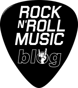

Red Hot Chili Peppers es una banda de rock alternativo y funk rock estadounidense formada en 1983 en Los Ángeles, California. Sus integrantes son, actualmente, el vocalista Anthony Kiedis, el guitarrista Josh Klinghoffer, el bajista Michael "Flea" Balzary, y el baterista Chad Smith. El estilo musical de la banda fusiona el funk tradicional con el rock y el rock alternativo incluyendo elementos de otros géneros como el rap, pop rock, heavy metal, dance, punk, hip hop e indie rock. Son considerados los inventores del punk funk.
Además de Kiedis y Flea, la formación original del grupo la completaban el baterista Jack Irons y el guitarrista Hillel Slovak. En las grabaciones de los primeros discos hubo diversos cambios en la formación, y solo en The Uplift Mofo Party Plan (1987) coincidieron los cuatro miembros fundadores en el estudio.
En 2008 la banda se tomó un descanso después de la última gira, durante el cual John Frusciante abandonó la banda. Desde octubre de 2009, con su nuevo guitarrista Josh Klinghoffer, han estado trabajando en su décimo álbum de estudio titulado I'm with You, publicado el 26 de agosto de 2011. Después de varios años dando conciertos en distintas partes del mundo sin presentar material nuevo, la banda lanzó su undécimo álbum llamado The Getaway, el 17 de junio de 2016.
Los Red Hot Chili Peppers han ganado siete Premios Grammy y en 2011 fueron elegidos para ingresar en el Rock and Roll Hall of Fame.
En verdad mi banda favorita. Creo que no hay tema de ellos que no me guste. Que opinan ustedes?
Pearl Jam es un grupo de grunge y rock alternativo formado en Seattle, Estados Unidos, en el año 1990. El grupo estaba originalmente compuesto por Stone Gossard (guitarra rítmica), Jeff Ament (bajo), Mike McCready (guitarra principal), Eddie Vedder (voz) y Dave Krusen (batería). El baterista en la formación actual es Matt Cameron, miembro asimismo de Soundgarden, que pertenece al grupo desde 1998.
Formada después de la desintegración de Mother Love Bone, grupo anterior de Gossard y Ament, Pearl Jam rompería el gran mercado con su álbum debut Ten. Junto a Nirvana, Alice in Chains y Soundgarden están considerados como una de las bandas más grandes e influyentes de toda la escena de Seattle. Pese a ser reconocidos como uno de los grupos más importantes e influyentes del grunge, Pearl Jam siempre destacó por un rock con toques más melódicos e influencias de grupos de rock de los años 60 y 70 como The Who, Led Zeppelin o Pink Floyd. Sus miembros siempre se han caracterizado por su rechazo a determinadas prácticas comunes en la industria musical, como por ejemplo la realización de vídeos promocionales; también es conocido su boicot a la empresa Ticketmaster. La revista Rolling Stone los describió en 2006 como un grupo que "se pasó la mayor parte de la década pasada destruyendo su propia fama"
Pearl Jam es considerado uno de los grupos más importantes de la década de 1990. Hasta la fecha, el grupo ha vendido 30 millones de álbumes en los Estados Unidos,4 así como una cantidad aproximada de 65 millones de discos en todo el mundo. Pearl Jam ha sobrevivido y superado en ventas a muchos de sus contemporáneos de la escena del rock alternativo de los noventa, y está considerada una de las bandas más influyentes de la década. El crítico de música Stephen Thomas Erlewine, de la revista musical Allmusic, califica a Pearl Jam como "la banda de rock norteamericana más popular de los 90". Los álbumes Vitalogy y Ten han sido incluidos por la revista Rolling Stone en su lista de los 500 mejores discos de la historia. La banda ha sido incluida en el Rock and Roll Hall of Fame y su cantante Eddie Vedder figura en la séptima posición de la lista de los 100 mejores cantantes de siempre elaborada por Rolling Stone.
La musica Alternativa marco un antes y un despues para muchos grupos que hoy son super famosos. O no?
Nirvana fue una banda de grunge estadounidense procedente de Aberdeen, Washington, Estados Unidos integrada por el vocalista y guitarrista Kurt Cobain y el bajista Krist Novoselic en 1987. Desde su formación, Nirvana pasó a través de una serie de frecuentes cambios de baterista hasta que en 1990 se les unió definitivamente el baterista Dave Grohl. Nirvana actualmente es considerada como una de las bandas más importantes e influyentes de la era moderna.
A finales de la década de los años 80 Nirvana se estableció como parte de la escena musical de Seattle con su álbum debut Bleach, lanzado bajo el sello independiente de Seattle, Sub Pop, en 1989.4 La banda finalmente llegó a desarrollar un sonido que se basaba en los contrastes dinámicos, a menudo versos tranquilos y coros intensos. Un año más tarde, la banda firmó con la discográfica DGC Records y en 1991 lanzó su segundo álbum: Nevermind. El primer sencillo del álbum Smells Like Teen Spirit, escaló las listas musicales en todo el mundo e inició la explosión de lo que hasta ese momento era conocido como punk y rock alternativo en la escena musical mundial, en un movimiento al que los medios de la época se referirían como grunge. Además de Nirvana, otras bandas de la escena musical de Seattle como Pearl Jam, Alice in Chains y Soundgarden también ganaron popularidad; como resultado, el rock alternativo se convirtió en el género dominante en la radio y la televisión musical durante la primera mitad de la década de los 90.
La corta carrera de Nirvana concluyó con la muerte de Cobain en 1994, pero su popularidad creció aún más en los años posteriores.
Una verdadera lastima que no podamos orilos en la actualidad con temas nuevos. Yo cre que si Cobain no moria hasta hoy serian uno de los mejores grupos de Rock alternativo.